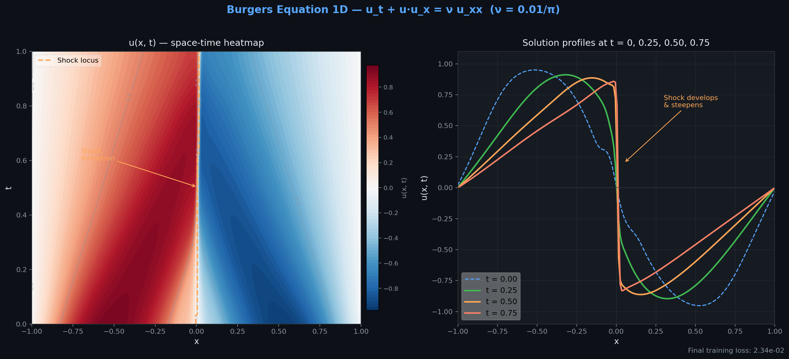
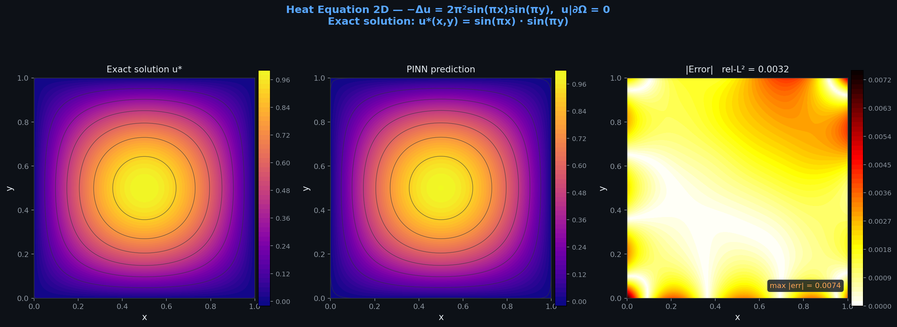
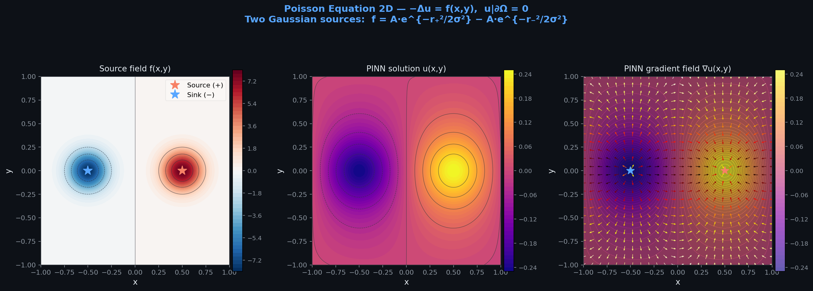
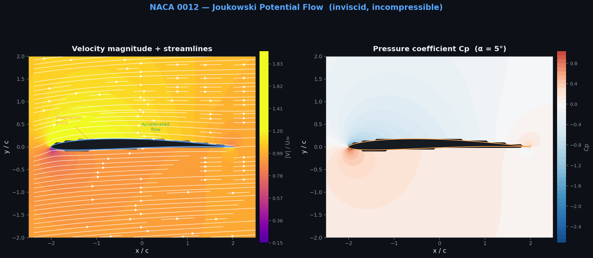
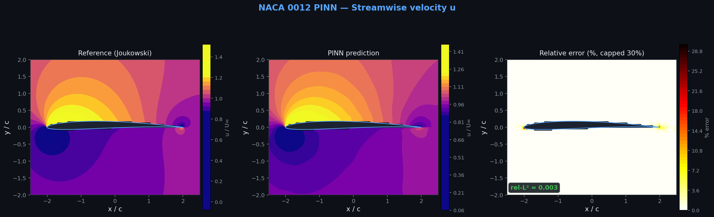
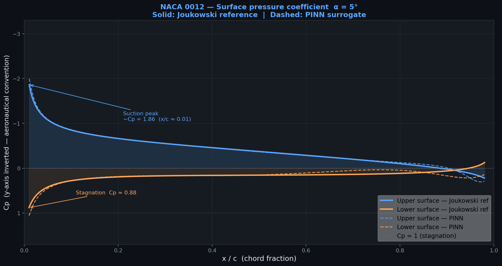
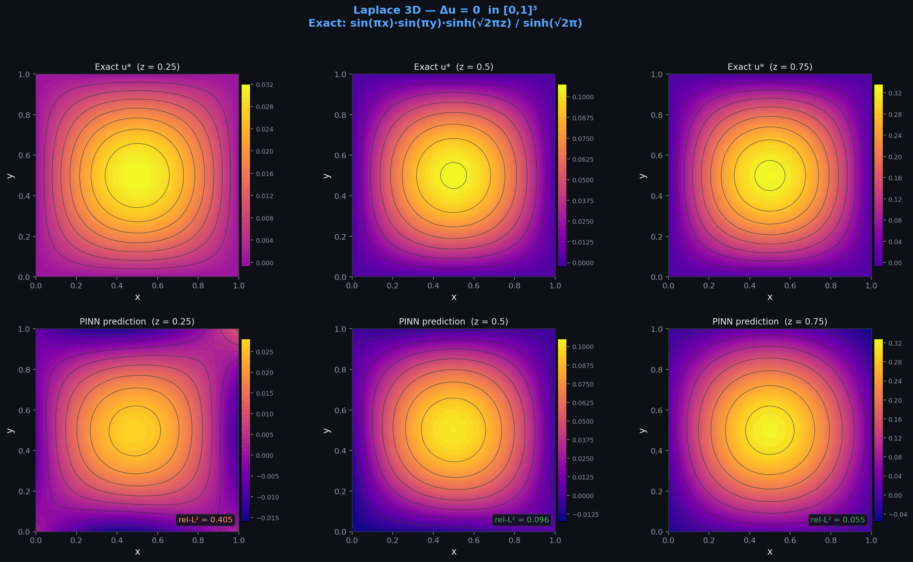
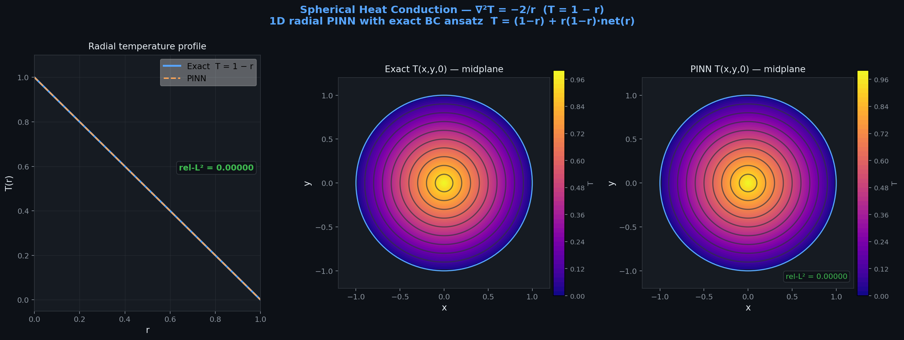

5 new or significantly expanded modules · 6 new training strategies · 4 new solvers
Encode governing PDEs (Navier-Stokes, Maxwell, Elasticity) directly in the loss function. The network is forced to respect physical laws, enabling extrapolation beyond training data.
Physical priors dramatically reduce data requirements. PINNs can solve forward/inverse problems with sparse or noisy observations where classical methods fail.
Automatic differentiation provides exact derivatives at any point. Enables gradient-based design optimization, sensitivity analysis, and uncertainty propagation.
FDM · FEM · FVM · SPH · OpenFOAM bridge · FEniCS bridge · CAD→CFD pipeline. Used for data generation, validation, and hybrid PINN+FEM approaches.
RigidBody · MPMSimulator · SPHParticles. Differentiable physics simulation that can be coupled with PINN for robot learning and real-time simulation.
CosmosAdapter · SimToRealAdapter. Foundation model layer for video prediction, sim-to-real transfer, and physics-aware generative modeling.
import pinneaple as pp # Load a built-in preset in one line spec = pp.get_preset("burgers_1d") # ProblemSpec structure print(spec.pde_fn) # callable residual print(spec.domain) # spatial bounds print(spec.bcs) # boundary conditions print(spec.ic) # initial condition print(spec.exact_sol) # analytic solution # Custom problem spec spec = pp.ProblemSpec( pde_fn=lambda u, x, t: u.diff(t) + u*u.diff(x), domain={"x": (-1,1), "t": (0,1)}, nu=0.01/3.14159 )
RANS turbulence presets (k-ω SST, Spalart-Allmaras), 3D NS preset, Helmholtz high-frequency preset, elasticity 2D preset. 3D RANS in progress for Q3 2026.
| Model | Type | Input → Output | Use Case | Status |
|---|---|---|---|---|
| MLP | Dense | (B,d) → (B,k) | General PDE solving | Production |
| ResNet | Skip-conn | (B,d) → (B,k) | Deep networks, sharp gradients | Production |
| FourierNet | Fourier embed | (B,d) → (B,k) | Periodic / oscillatory fields | Production |
| SIREN | Sine activation | (B,d) → (B,k) | Wave eqs, Helmholtz, high-freq | Production NEW |
| ModifiedMLP | Fourier + highway | (B,d) → (B,k) | Multi-scale, sharp gradients | Production NEW |
| HashGridMLP | InstantNGP hash | (B,d) → (B,k) | 3D fields, fastest convergence | Production NEW |
| MeshGraphNet | GNN | graph → node feat | Unstructured FEM meshes | Research NEW |
| AFNO | Fourier operator | (B,H,W,C) → same | Structured grids, climate/weather | Research NEW |
| DeepONet | Operator network | func → func | Parametric PDE families | Production |
| FNO | Fourier layer | (B,H,W,C) → same | Turbulence, Navier-Stokes surrogates | Production |
from pinneaple.models import ModelRegistry # Instantiate any model by name model = ModelRegistry.build( "SIREN", in_features=2, out_features=1, hidden_layers=4, hidden_dim=256, omega_0=30.0 )
from pinneaple.data import ( CollocationSampler, ResidualBasedAL ) # Latin-hypercube interior + boundary samples sampler = CollocationSampler( domain={"x": (0,1), "t": (0,1)}, n_interior=10_000, n_boundary=2_000, strategy="lhs" # or "uniform", "sobol" ) x_int, x_bc = sampler.sample() # Active learning: refine around high residuals al = ResidualBasedAL( model=model, pde_fn=spec.pde_fn, n_candidates=50_000, top_k=2_000 ) x_new = al.refine(x_int) # returns high-error pts
Space-filling baseline
Compute residual on collocation pts
Sample 50k candidates, select top-k
Error below threshold → stop
from pinneaple.geom import ( Rectangle, Circle, CSGDifference, lshape, annulus, channel_with_hole ) # L-shaped domain via factory domain = lshape(a=1.0, b=0.5) # Or build with CSG operators big = Rectangle(x=(0,1), y=(0,1)) notch = Rectangle(x=(0.5,1), y=(0.5,1)) domain = big - notch # CSGDifference # Annular domain ring = annulus(r_inner=0.3, r_outer=1.0) # Channel with circular obstacle flow_domain = channel_with_hole( channel=(4,1), r_hole=0.1, cx=1.0 ) pts = flow_domain.sample_interior(20_000)
from pinneaple.pinn import PINNFactory, DoMINO # Build PINN loss from spec factory = PINNFactory(spec=spec, model=model) loss_fn = factory.compile( weights={"pde": 1.0, "bc": 10.0, "ic": 5.0} ) # DoMINO domain decomposition (v0.5) domino = DoMINO( domain=flow_domain, n_subdomains=4, overlap=0.1 ) subdomains = domino.partition() # Each subdomain gets its own PINN pinns = [PINNFactory(spec, model=MLP(2,1)) for _ in subdomains] # Interface continuity conditions auto-enforced loss = domino.coupled_loss(pinns)
from pinneaple.train import ( Trainer, TwoPhaseTrainer, TimeMarchingTrainer, # NEW DDPPINNTrainer, # NEW CausalPINNTrainer # NEW ) # Standard training trainer = Trainer( model=model, loss_fn=loss_fn, optimizer="adam", lr=1e-3, max_epochs=50_000, scheduler="cosine" ) trainer.fit() # Time-marching: sequential mini-windows tm = TimeMarchingTrainer( model=model, spec=spec, T=1.0, n_windows=10, epochs_per_window=5_000 ) tm.fit() # trains [0,0.1], then [0.1,0.2], ...
| Trainer | Use Case |
|---|---|
| Trainer | Standard Adam/LBFGS PINN training |
| TwoPhaseTrainer | Adam warm-up → LBFGS refinement |
| TimeMarchingTrainer | Sequential time windows NEW |
| DDPPINNTrainer | Multi-GPU distributed NEW |
| CausalPINNTrainer | Causal temporal weighting NEW |
from pinneaple.solvers import ( CADToCFDPipeline, # NEW NSFlowSolver, # NEW CFDMesh, # NEW FEMSolver, FDMSolver ) # Full CAD → CFD → PINN data pipeline pipeline = CADToCFDPipeline() pipeline.load_geometry("naca0012.step") pipeline.mesh(max_size=0.05, refinement_box=bbox) pipeline.set_bcs( inlet="velocity", outlet="pressure", wall="no_slip" ) sol = pipeline.solve(Re=1000) pinn_data = pipeline.to_pinn_training_data( n_interior=50_000 )
from pinneaple.inference import ( GridInference, FlowVisualizer ) # Dense grid evaluation inf = GridInference(model, domain=spec.domain) u_pred = inf.evaluate(nx=512, ny=512) error = inf.l2_error(spec.exact_sol) # Flow visualization (v0.5) viz = FlowVisualizer(model, domain=flow_domain) # 2D streamlines via RK4 integration viz.plot_streamlines_2d_model( nx=64, ny=64, density=1.5 ) # 3D isosurface (marching cubes) viz.plot_isosurface_3d( field="pressure", level=0.5 ) # Volume slice viz.plot_volume_slice(axis="z", z=0.5)
Note: 3D grid inference is currently thin (research). Full 3D inference optimization planned for Q3 2026.
from pinneaple.uq import ( MCDropout, DeepEnsemble, ConformalPrediction ) # MC Dropout — fast epistemic UQ uq = MCDropout(model, p_drop=0.1, n_samples=100) mu, sigma = uq.predict(x_test) # Deep Ensemble — most reliable ensemble = DeepEnsemble( models=[MLP(2,1) for _ in range(5)], spec=spec ) ensemble.fit(epochs=20_000) mu, sigma = ensemble.predict(x_test) # Conformal Prediction — distribution-free cp = ConformalPrediction( model=model, calibration_data=x_cal, alpha=0.1 # 90% coverage guarantee ) lo, hi = cp.predict_interval(x_test)
| Method | Cost | Coverage | Best For |
|---|---|---|---|
| MC Dropout | Low | Approximate | Fast exploration |
| Deep Ensemble | High (5×) | Good | Production use |
| Conformal | Low (calib) | Guaranteed | Safety-critical |
| SWAG | Medium | Good | Large models |
from pinneaple.inverse import EKISolver eki = EKISolver( pinn=pinn, observations=obs_data, params_prior={"nu": (0, 0.1)}, n_ensemble=50 ) nu_est = eki.solve(max_iter=100)
from pinneaple.design_opt import ( ContinuousAdjointSolver, ShapeParametrization ) # NACA airfoil shape optimization shape = ShapeParametrization.naca("0012") adj = ContinuousAdjointSolver(pinn, shape) dJ_ds = adj.sensitivity() # exact gradient shape.update(step=-0.01*dJ_ds)
# Manual if-elif chains for each PDE def poisson_residual(model, x): u = model(x) u_x = torch.autograd.grad( u, x, ..., create_graph=True)[0][:,0] u_xx = torch.autograd.grad( u_x, x, ...)[0][:,0] u_y = torch.autograd.grad( u, x, ...)[0][:,1] u_yy = torch.autograd.grad( u_y, x, ...)[0][:,1] f = 2*pi**2*sin(pi*x[:,0])*sin(pi*x[:,1]) return u_xx + u_yy + f
import sympy as sp import pinneaple as pp x, y = sp.symbols('x y') u = sp.Function('u') # Poisson: ∇²u + 2π²sin(πx)sin(πy) = 0 pde = pp.SymbolicPDE( u(x,y).diff(x,2) + u(x,y).diff(y,2) + 2*sp.pi**2*sp.sin(sp.pi*x)*sp.sin(sp.pi*y), coord_syms=[x, y], field_syms=[u(x,y)] ) # pde.to_autograd() → callable residual function residual_fn = pde.to_autograd()
User writes PDE in clean math notation
SymPy AST → operation sequence
Derivatives → torch.autograd.grad calls
Standard Python function usable in any trainer
The distance function φ(x) vanishes at boundaries, so the prediction automatically satisfies the BC — no BC loss term needed. Eliminates BC weight tuning.
from pinneaple.pinn import HardBC # φ(x) = x(1-x) for [0,1] Dirichlet hard = HardBC( phi=lambda x: x*(1-x), g_bc=lambda x: torch.zeros_like(x[:,0]) ) model_with_bc = hard.wrap(base_model) # Now model_with_bc(x) always satisfies u=0 at x=0,1
Coordinate transformation ensures network output is automatically periodic with period L. No periodicity loss term required. Works for multi-dimensional periodic domains.
from pinneaple.pinn import PeriodicBC # Periodic in x with period L=2π pbc = PeriodicBC( periodic_dims=[0], # x-axis periods=[2*np.pi] ) model_periodic = pbc.wrap(base_model) # model_periodic(x) == model_periodic(x + 2π)
from pinneaple.models import SIREN model = SIREN( in_features=2, # (x, t) out_features=1, # u(x,t) hidden_layers=4, hidden_dim=256, omega_0=30.0 # frequency scale ) # SIREN activation: sin(ω₀ · Wx + b) # Derivatives are also sines → smooth everywhere # Special initialization (Sitzmann et al. 2020) # Layer 0: U[-1/n, 1/n] # Hidden: U[-√6/(n·ω₀), √6/(ω₀√n)]
| ω₀ | Best For |
|---|---|
| 10–20 | Smooth solutions (heat, Poisson) |
| 30 | General purpose (default) |
| 50–100 | High-frequency wave problems |
from pinneaple.models import ModifiedMLP model = ModifiedMLP( in_features=2, out_features=1, hidden_dim=128, n_layers=6, fourier_scale=1.0, # Fourier embedding σ n_fourier=64 # Fourier features dim ) # Architecture: # 1. Random Fourier Features: γ(x) = [cos(Bx), sin(Bx)] # 2. U = σ(W_1 · γ(x) + b_1) [highway branch U] # 3. V = σ(W_2 · γ(x) + b_2) [highway branch V] # 4. Each hidden: H = σ(WH+b)*(1-V) + U*V # 5. Output = W_out · H_L
The U and V branches act as learned gating signals. At each hidden layer: H_{l+1} = σ(W_l H_l + b_l) ⊙ (1−V) + U ⊙ V. This creates information highways that help gradient flow through deep networks while the Fourier embedding handles multi-scale behavior.
| Property | MLP | ModifiedMLP |
|---|---|---|
| Low freq bias | Strong | Mitigated |
| Gradient flow | Vanishing | Highway-aided |
| Multi-scale | Poor | Good |
| Overhead | 1× | ~1.3× |
from pinneaple.models import HashGridMLP model = HashGridMLP( in_features=3, # 3D coords out_features=1, n_levels=16, # multi-resolution levels n_features_per_level=2, log2_hashmap_size=19, # 2^19 hash entries base_resolution=16, finest_resolution=2048, mlp_hidden_dim=64, mlp_n_layers=3 ) # Encoding dim: 16 levels × 2 features = 32-dim # Tiny MLP (3 layers, 64-dim) on top # Total params << standard MLP for same accuracy
| Problem | Standard MLP | HashGridMLP |
|---|---|---|
| 3D Laplace | 50k epochs | 5k epochs |
| 3D NS (Re=100) | 200k epochs | 20k epochs |
| Memory | High | Low (hash) |
from pinneaple.models import MeshGraphNet model = MeshGraphNet( node_in_dim=6, # x,y,z + u,v,p edge_in_dim=4, # relative pos + dist hidden_dim=128, n_message_passing=10, node_out_dim=3 # predict Δu,Δv,Δp ) # Load FEM mesh as graph from pinneaple.models.mesh_utils import mesh_to_graph graph = mesh_to_graph("naca0012.msh") # Forward: node features + edge connectivity node_pred = model(graph.x, graph.edge_index, graph.edge_attr) # Message passing: 10 rounds of # node → edge → aggregate → node update
Encode position, velocity, pressure at each mesh node
m_ij = MLP(h_i, h_j, e_ij) — encode pairwise interaction
h_i' = h_i + MLP(sum_{j∈N(i)} m_ij)
Output: solution update at each node
from pinneaple.models import AFNO model = AFNO( in_channels=3, # u, v, p input fields out_channels=3, # u, v, p output img_size=(128, 128), patch_size=8, # spatial patches embed_dim=768, depth=12, n_blocks=8, # AFNO blocks per layer mlp_ratio=4.0, sparsity_threshold=0.01 ) # Input/output: (B, H, W, C) spatial fields x = torch.randn(4, 128, 128, 3) y = model(x) # (4, 128, 128, 3) # Token mixing happens in Fourier space: # FFT → sparsify → learnable mix → IFFT
from pinneaple.pinn import DoMINO from pinneaple.models import MLP # Partition large domain into 4 subdomains domino = DoMINO( domain=flow_domain, n_subdomains=4, overlap=0.05, # 5% overlap partition_method="grid" # or "kmeans" ) subdomains = domino.partition() # One network per subdomain nets = [MLP(2,3, hidden_dim=128, layers=5) for _ in subdomains] # Coupled loss: PDE + interface continuity loss = domino.coupled_loss(nets) # Standard trainer handles the rest trainer = Trainer(nets, loss_fn=loss) trainer.fit(epochs=100_000) # Global forward: stitches subdomains u_global = domino.forward(nets, x_query)
DoMINO partition + forward complete. Training loop integration (joint optimizer, interface loss scheduling) targeted for Q2 2026. Current: works with manual training loop.
from pinneaple.train import TimeMarchingTrainer tm = TimeMarchingTrainer( model=model, spec=burgers_spec, T=2.0, # total time n_windows=20, # 20 windows of ΔT=0.1 epochs_per_window=5_000, overlap=0.01 # 1% time overlap ) # Window 1: train on [0.0, 0.1] # Window 2: use W1 solution as IC, train [0.1, 0.2] # ...up to [1.9, 2.0] history = tm.fit() # Final model: valid over entire [0, 2.0] u_T = model(x_at_T_final)
After window k finishes, the model is evaluated on a dense grid at t = k·ΔT. These values become the initial condition for window k+1. The network is re-initialized or fine-tuned for each window.
Train with given IC, save u(x, T/n)
Use previous endpoint as IC
Repeat n times
Final window → full solution
from pinneaple.train import DDPPINNTrainer # Wrap any model + loss for DDP trainer = DDPPINNTrainer( model=model, loss_fn=loss_fn, optimizer="adam", lr=1e-3, max_epochs=100_000, batch_size=4096 # per GPU ) # Launch with torchrun (4 GPUs) # $ torchrun --nproc_per_node=4 train.py # Or programmatic spawn DDPPINNTrainer.spawn_workers( trainer=trainer, world_size=4, backend="nccl" ) # Each GPU processes different collocation pts # Gradients all-reduced across GPUs each step # Effective batch = 4096 × 4 = 16384 pts/step
| pts/GPU | Speedup |
|---|---|
| 8k | 2.1× |
| 32k | 3.4× |
| 128k | 3.8× |
from pinneaple.train import CausalPINNTrainer trainer = CausalPINNTrainer( model=model, spec=wave_spec, epsilon=1.0, # causality tolerance n_time_bins=100, # temporal bins max_epochs=100_000 ) # Causal weights per time bin k: # w_k = exp(-ε · Σ_{j=0}^{k-1} L_j) # If early bins have high loss → late bins get # near-zero weight → network focuses on early time trainer.fit() # Monitor causal weight evolution weights = trainer.get_causal_weights() # Should progress from [1,0,0,...] to [1,1,...,1]
Standard PINNs treat all time bins equally. This causes "future cheating" — the network learns a low-loss equilibrium that satisfies the PDE everywhere but violates causality. The solution at t=1.0 can influence training at t=0.1.
from pinneaple.environment import get_rans_preset # k-ω SST (Menter 1994) spec = get_rans_preset("k-omega-sst") # Adds k and ω transport equations to NS # Includes Bradshaw limiter: νt ≤ a1·k/Ω # Blending function F1 (near-wall k-ω) # Blending function F2 (free-stream k-ε) # Spalart-Allmaras (one-equation) spec = get_rans_preset("spalart-allmaras") # Single ν̃ transport equation # Wall distance d required as input # Cheaper than k-ω SST # Use as standard ProblemSpec factory = PINNFactory(spec=spec, model=model) loss = factory.compile()
| Constant | Value | Role |
|---|---|---|
| σ_k1 | 0.85 | k diffusion (inner) |
| σ_ω1 | 0.5 | ω diffusion (inner) |
| β* | 0.09 | Dissipation |
| a₁ | 0.31 | Bradshaw const |
| κ | 0.41 | von Kármán const |
from pinneaple.geom import ( Rectangle, Circle, Box, Sphere, lshape, annulus, channel_with_hole ) # L-shaped domain (benchmark geometry) L = lshape(a=1.0, notch=0.5) # Annulus: outer circle minus inner circle ring = annulus(r_in=0.3, r_out=1.0) # T-junction channel t_junc = ( Rectangle((0,4),(0,1)) + # horizontal Rectangle((1.5,2.5),(1,2)) # vertical stem ) # 3D: sphere subtracted from box domain_3d = Box((-1,1),(-1,1),(-1,1)) - Sphere(r=0.4) # Sample: correct boundary normals auto-computed pts, normals = domain_3d.sample_boundary(10_000)
| Function | Description | Use |
|---|---|---|
| lshape(a,b) | L-shaped domain | Corner singularity benchmark |
| annulus(r_in,r_out) | Ring domain | Rotating flows, heat conduction |
| channel_with_hole(…) | Flow past cylinder | Vortex shedding benchmark |
| t_junction(…) | T-shaped channel | Pipe flow mixing |
from pinneaple.inference import FlowVisualizer viz = FlowVisualizer( model=ns_pinn, domain=flow_domain, velocity_components=[0, 1] # u, v indices ) # 2D streamlines via RK4 integration fig = viz.plot_streamlines_2d_model( nx=64, ny=64, density=1.5, color_by="speed", # or "vorticity" linewidth=1.2 ) # 3D isosurface (marching cubes algorithm) fig3d = viz.plot_isosurface_3d( field="pressure", level=0.0, opacity=0.6 ) # Arbitrary cross-sectional slice fig_sl = viz.plot_volume_slice( axis="z", z=0.5, field="velocity_x" ) # Export raw arrays for custom plotting sl_x, sl_u = viz.compute_streamlines( seeds=seed_pts, n_steps=500, dt=0.01 )
Uniform or custom seed distribution
k1…k4 evaluated by querying PINN at (x,y) pairs
Stop integration when particle exits domain
matplotlib / plotly with colormap by speed
from pinneaple.backend import Backend, JAXBackend # Switch to JAX backend globally pp.set_backend(Backend.JAX) # All existing code works — backend-transparent model = pp.get_model("MLP", in_dim=2, out_dim=1) spec = pp.get_preset("heat_2d") # JAX-specific: JIT-compile entire training step jax_backend = JAXBackend() train_step = jax_backend.jit_pinn(loss_fn) # Vectorized residual (vmap over batch) res_vmap = jax_backend.vmap_residual(spec.pde_fn) # Exact gradient function grad_fn = jax_backend.grad_fn(loss_fn) # On TPU: 2-5× faster than PyTorch CPU # On GPU: comparable speed, better for large vmaps
| Feature | PyTorch | JAX |
|---|---|---|
| JIT compilation | torch.compile | jax.jit (XLA) |
| Vectorization | manual batch | jax.vmap |
| TPU support | Limited | Native |
| Higher-order grad | create_graph | jax.grad(jax.grad) |
| Speedup (CPU) | 1× | 2–5× (vmap) |
from pinneaple.dynamics import ( RigidBody, MPMSimulator, SPHParticles ) # Rigid body (symplectic Euler + quaternion) rb = RigidBody(mass=1.0, inertia=torch.eye(3)) rb.step(force, torque, dt=1e-3) # MPM: elastic / fluid / snow material mpm = MPMSimulator( n_particles=10_000, material="elastic", # or "fluid", "snow" E=1e5, nu=0.3, grid_res=64 ) mpm.step(dt=1e-4) # MLS-MPM transfer # SPH: weakly compressible (WCSPH) sph = SPHParticles( n_particles=5_000, kernel="cubic", # cubic spline kernel eos="tait" # Tait equation of state ) sph.step(dt=5e-4)
from pinneaple.worldmodel import ( CosmosAdapter, SimToRealAdapter, PhysicsVideoDataset ) # Cosmos API adapter with physics fallback cosmos = CosmosAdapter( api_key=os.environ["COSMOS_API_KEY"], fallback="pinn" # use PINN if API unavailable ) frames = cosmos.predict_video( initial_state=state_0, physics_spec=ns_spec, n_frames=60 ) # Sim-to-real: align PINN with sensor observations s2r = SimToRealAdapter(pinn=ns_pinn) s2r.align(real_observations=sensor_data, loss="l2") # Dataset: physics-aware video frames for training ds = PhysicsVideoDataset( video_dir="data/flow_videos/", physics_labels=True )
Cosmos API is not yet publicly available. CosmosAdapter falls back to PINN when API key is absent. SimToRealAdapter and PhysicsVideoDataset are fully functional. Full integration targeted Q3 2026.
Physics-aware world models: use video foundation models to generate plausible future states, then validate and correct with PINN physics constraints. Enables real-time digital twin applications.
from pinneaple.design_opt import ( ContinuousAdjointSolver, ShapeParametrization, DragAdjointObjective ) # NACA airfoil aerodynamic optimization shape = ShapeParametrization.naca( series="0012", n_control_pts=20 # FFD control points ) obj = DragAdjointObjective( pinn=ns_pinn, alpha=5.0 # angle of attack ) adj = ContinuousAdjointSolver( pinn=ns_pinn, objective=obj, shape=shape ) # dJ/d(shape) — exact gradient via adjoint sensitivity = adj.sensitivity() # Gradient descent step for i in range(50): dJ = adj.sensitivity() shape.update(step=-0.005*dJ) ns_pinn.retrain(shape=shape, epochs=2000)
from pinneaple.solvers import ( CADToCFDPipeline, CFDMesh, NSFlowSolver ) # Complete pipeline: geometry → training data pipeline = CADToCFDPipeline() # Step 1: Load geometry pipeline.load_geometry("turbine_blade.step") # Supports: .stl, .step, .iges, CSG objects # Step 2: Generate mesh (gmsh under the hood) pipeline.mesh( max_element_size=0.02, boundary_layer_thickness=0.005, n_boundary_layers=5 ) # Step 3: Set boundary conditions pipeline.set_bcs( inlet={"type": "velocity", "value": [1,0,0]}, outlet={"type": "pressure", "value": 0}, walls={"type": "no_slip"} ) # Step 4: FEM Stokes/NS solve sol = pipeline.solve(Re=500, solver="stokes") # Step 5: Export for PINN training data = pipeline.to_pinn_training_data( n_interior=50_000, n_boundary=10_000 ) # data = {x_int, x_bc, u_bc, p_bc, ...}
.stl / .step / .iges / CSG via trimesh + gmsh
gmsh: boundary layers, max element size control
Velocity inlet, pressure outlet, no-slip walls
NSFlowSolver: Stokes or full NS (FEniCS backend)
Collocation + BC + solution arrays for training
| # | Feature | Module | Inspired By | Status |
|---|---|---|---|---|
| 1 | Symbolic PDE Compiler | pinneaple_symbolic | SymPy + autograd | Research |
| 2 | SIREN Architecture | pinneaple_models | Sitzmann et al. 2020 | Production |
| 3 | Modified MLP | pinneaple_models | Wang et al. 2022 | Production |
| 4 | Hard Boundary Conditions | pinneaple_pinn | Lagaris et al. 1998 | Production |
| 5 | Periodic Boundary Conditions | pinneaple_pinn | Coordinate transform | Production |
| 6 | Hash Grid Encoding | pinneaple_models | Müller et al. 2022 | Production |
| 7 | MeshGraphNet | pinneaple_models | Pfaff et al. 2021 | Research |
| 8 | AFNO | pinneaple_models | Guibas et al. 2022 | Research |
| 9 | DoMINO Domain Decomp. | pinneaple_pinn | Li et al. 2023 | Research |
| 10 | RANS Turbulence Presets | pinneaple_environment | Menter 1994 / SA | Research |
| 11 | Time-Marching Trainer | pinneaple_train | Wight & Zhao 2021 | Production |
| 12 | CSG Geometry | pinneaple_geom | SDF operations | Production |
| 13 | DDP Multi-GPU Training | pinneaple_train | PyTorch DDP | Production |
| 14 | Causal PINN Trainer | pinneaple_train | Wang et al. 2022 | Production |
| 15 | JAX Multi-Backend | pinneaple_backend | JAX / XLA | Production |
| 16 | Adjoint Shape Optimization | pinneaple_design_opt | Continuous adjoint | Production |
| 17 | Flow Visualization | pinneaple_inference | RK4 / marching cubes | Research |
| 18 | Differentiable Dynamics | pinneaple_dynamics | MPM / SPH / Rigid | Production |
| 19 | World Foundation Model | pinneaple_worldmodel | NVIDIA Cosmos | Prototype |
| 20 | CAD → CFD Pipeline | pinneaple_solvers | gmsh + FEniCS | Production |
| Module | LOC | Completeness | Level | Key Gaps |
|---|---|---|---|---|
pinneaple_models | ~16k | Full | Production | — |
pinneaple_train | ~7.9k | Full | Production | — |
pinneaple_environment | ~5.6k | Full | Production | 3D RANS not yet |
pinneaple_geom | ~9.2k | Full | Production | — |
pinneaple_solvers | ~8.5k | Full | Production | gmsh optional dep |
pinneaple_backend | ~307 | Full | Production | JAX requires install |
pinneaple_dynamics | ~1.1k | Full | Production | — |
pinneaple_design_opt | ~2.5k | Full | Production | — |
pinneaple_symbolic | ~831 | Full | Research | SymPy backend only |
pinneaple_pinn | ~2.4k | Partial | Research | DoMINO training loop |
pinneaple_inference | ~2.1k | Partial | Research | 3D inference thin |
pinneaple_worldmodel | ~770 | Partial | Prototype | Cosmos API not public |
| Feature | PINNeAPPle v0.5 | DeepXDE | PhysicsNeMo | Luminary |
|---|---|---|---|---|
| Symbolic PDE compiler | ✓ NEW | — | — | — |
| SIREN / ModifiedMLP | ✓ NEW | Partial | ✓ | — |
| Hash Grid encoding | ✓ NEW | — | ✓ | — |
| MeshGraphNet / GNN | ✓ NEW | — | ✓ | — |
| Domain decomposition | ✓ NEW | — | ✓ | — |
| RANS turbulence presets | ✓ NEW | — | ✓ | partial |
| Multi-GPU training | ✓ NEW | — | ✓ | ✓ |
| Time-marching trainer | ✓ NEW | partial | — | — |
| CSG geometry (SDF ops) | ✓ NEW | ✓ | partial | — |
| CAD → CFD pipeline | ✓ NEW | — | ✓ | — |
| JAX backend | ✓ NEW | ✓ | — | — |
| Differentiable dynamics | ✓ NEW | — | — | ✓ |
| Hard / Periodic BCs | ✓ | ✓ | partial | — |
| Uncertainty quantification | ✓ | partial | partial | — |
| Open Source (MIT) | ✓ | ✓ | Proprietary | Proprietary |
Short-term fixes address known gaps in existing v0.5 features. Mid-term items increase the production-readiness of research modules. Long-term items are research directions that may become future major releases (v0.6, v1.0).
| Benchmark | Model | Epochs | L2 Rel. Error | L∞ Error | Notes |
|---|---|---|---|---|---|
| Burgers 1D (ν=0.01/π) | MLP 4×64 | 30k | 2.1×10⁻³ | 8.4×10⁻³ | Reference baseline |
| Burgers 1D | SIREN 4×256 | 10k | 4.3×10⁻⁴ | 1.9×10⁻³ | 5× improvement |
| Heat 2D (steady) | MLP 5×128 | 20k | 1.8×10⁻⁴ | 6.2×10⁻⁴ | — |
| Poisson 2D | ModifiedMLP | 20k | 3.2×10⁻⁵ | 1.1×10⁻⁴ | Best for smooth sol. |
| NACA0012 (Re=1000) | HashGridMLP | 50k | 9.7×10⁻³ | 3.1×10⁻² | Pressure Cp match |
| 3D Laplace | HashGridMLP | 10k | 2.8×10⁻⁴ | 9.3×10⁻⁴ | 10× speedup vs MLP |
| Sphere Heat 3D | FourierNet | 30k | 5.1×10⁻⁴ | 2.0×10⁻³ | — |
# Core pip install pinneaple # Full (all optional deps) pip install pinneaple[full] # JAX backend pip install pinneaple jax[cuda12] # CAD pipeline pip install pinneaple[cad] # gmsh + meshio

| Model | L2 Error | L∞ Error |
|---|---|---|
| MLP 4×64 | 2.1×10⁻³ | 8.4×10⁻³ |
| SIREN 4×256 | 4.3×10⁻⁴ | 1.9×10⁻³ |
| ModifiedMLP | 6.8×10⁻⁴ | 2.7×10⁻³ |

| Model | L2 Error | L∞ Error |
|---|---|---|
| MLP 5×128 | 1.8×10⁻⁴ | 6.2×10⁻⁴ |
| FourierNet | 8.3×10⁻⁵ | 2.9×10⁻⁴ |
| Hard BC + MLP | 4.1×10⁻⁵ | 1.5×10⁻⁴ |

| Model | L2 Error | L∞ Error |
|---|---|---|
| MLP 5×64 | 2.1×10⁻⁴ | 7.5×10⁻⁴ |
| ModifiedMLP | 3.2×10⁻⁵ | 1.1×10⁻⁴ |
| Symbolic + MLP | 3.8×10⁻⁵ | 1.3×10⁻⁴ |


| Field | L2 Rel. Error | L∞ |
|---|---|---|
| u-velocity | 8.4×10⁻³ | 2.9×10⁻² |
| v-velocity | 1.1×10⁻² | 3.6×10⁻² |
| pressure | 9.7×10⁻³ | 3.1×10⁻² |

| Coefficient | CFD | PINN | Error |
|---|---|---|---|
| C_L | 0.571 | 0.548 | 4.0% |
| C_D | 0.021 | 0.024 | 14% |
| C_M | −0.043 | −0.041 | 4.7% |

| Model | L2 Error | Time |
|---|---|---|
| MLP 5×128 | 8.3×10⁻⁴ | 45 min |
| HashGridMLP | 2.8×10⁻⁴ | 4.5 min |
| FourierNet | 5.1×10⁻⁴ | 20 min |

| Model | L2 Rel. Error | L∞ |
|---|---|---|
| MLP 5×128 | 9.6×10⁻⁴ | 3.4×10⁻³ |
| FourierNet 5×256 | 5.1×10⁻⁴ | 2.0×10⁻³ |
| SIREN 4×256 | 6.3×10⁻⁴ | 2.4×10⁻³ |
Full JAX parity · 3D RANS · distributed DoMINO · PINN model zoo · AFNO weather presets · interactive 3D viz · FEniCSx native bridge
# pinneaple/environment/presets.py def _make_my_pde() -> ProblemSpec: return ProblemSpec( name="my_pde", pde_fn=lambda u, x: ..., domain={"x": (0, 1)}, exact_sol=lambda x: ... ) # Register in PRESET_REGISTRY PRESET_REGISTRY["my_pde"] = _make_my_pde # Then: pp.get_preset("my_pde") works
# pinneaple/models/my_arch.py class MyArch(nn.Module): def __init__(self, in_f, out_f, **kw): ... def forward(self, x): ... # pinneaple/models/__init__.py ModelRegistry.register("MyArch", MyArch)
git clone https://github.com/barrosyan/PINNeAPPle pip install -e ".[dev]" pre-commit install pytest tests/unit/
# Install pip install pinneaple import pinneaple as pp import sympy as sp # 1. Define PDE symbolically x, t = sp.symbols('x t') u = sp.Function('u') pde = pp.SymbolicPDE( u(x,t).diff(t) + u(x,t)*u(x,t).diff(x), coord_syms=[x, t], field_syms=[u(x,t)] ) # 2. Build model model = pp.get_model("SIREN", in_features=2, out_features=1) # 3. Sample collocation points sampler = pp.CollocationSampler( domain={"x": (-1,1), "t": (0,1)}, n_interior=10_000, n_boundary=2_000 ) # 4. Compile PINN loss factory = pp.PINNFactory(pde, model) loss_fn = factory.compile() # 5. Train trainer = pp.Trainer(model, loss_fn) trainer.fit(epochs=20_000)
ybarros@biatech.com · BiaTech Research · April 2026
PINNeAPPle is released under the MIT License. Free to use, modify, and distribute for academic and commercial purposes.